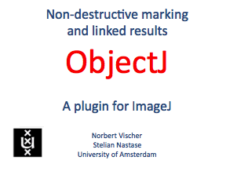
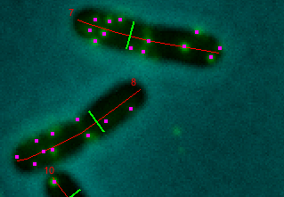

14-May-2014
 
- ObjectJ supports graphical vector objects that non-destructively mark images on a transparent layer.
- Vector objects can display points or paths with sub-pixel resolution; they can be placed manually or by macro commands.
- Composite objects can encapsulate different color-coded marker structures in order to bundle features that belong together
- ObjectJ provides back-and-forth navigation between results and images. The results table supports statistics, sorting, color coding, qualifying and macro access.
- A single file such as "MyProject.ojj" is used to maintain the link between markers and measurements across many images or stacks.